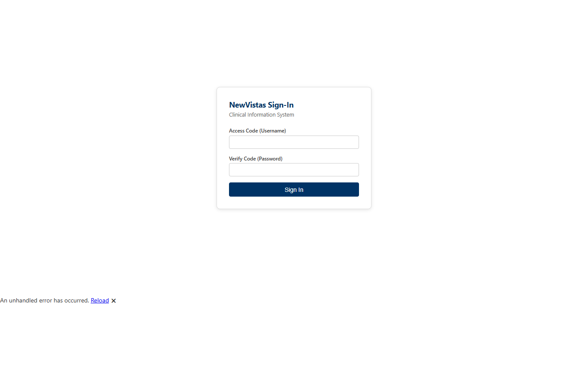
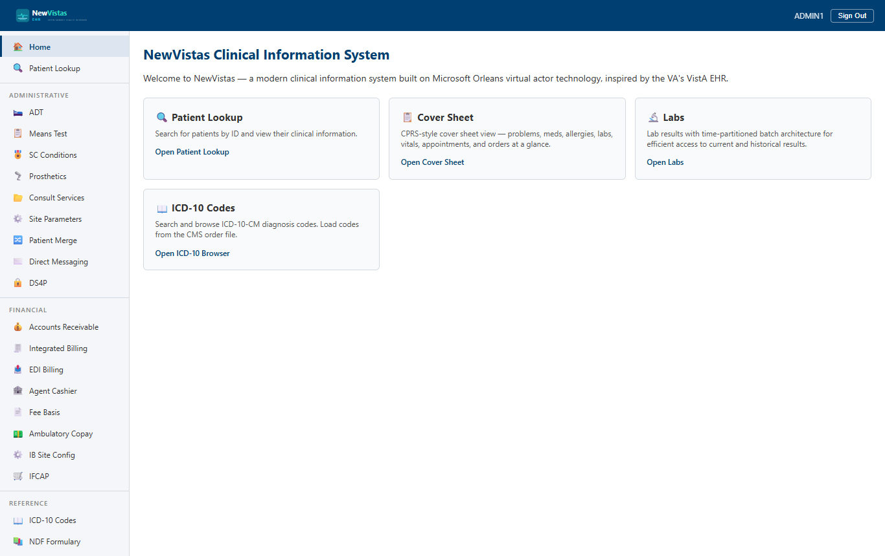
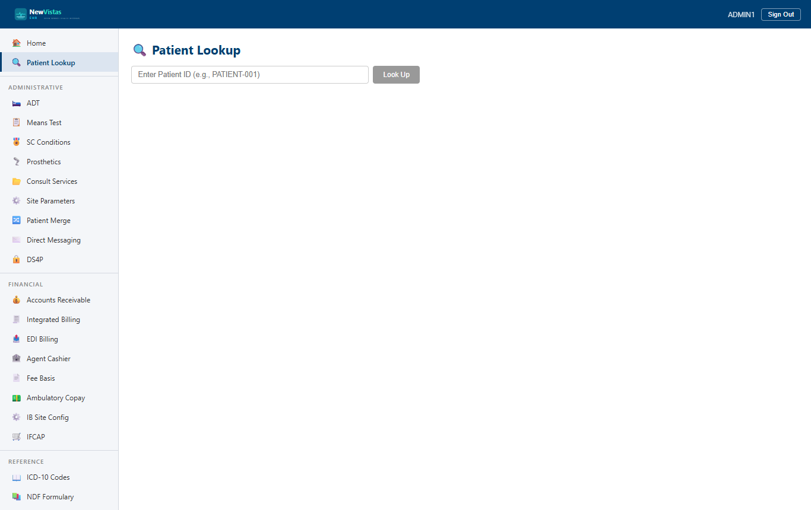

Getting Started
Sign in, find your way around the role-scoped menu, and pull up a patient.
1. Sign in first
NewVistas is login-first: you cannot see any screens — or even the menu of features — until you authenticate. Opening any address takes you straight to the Sign-In screen.

- Enter your Access Code (username), e.g.
ADMIN1. - Enter your Verify Code (password).
- Click Sign In (or press Enter).
2. Your menu is scoped to your role
After sign-in you land on the home screen. The left sidebar shows only the areas your security keys grant. An administrator sees Administrative (ADT, Patient Merge, Registration), Financial (Means Test, Integrated Billing), and the system-administration items (Security Keys, Site Parameters), alongside Reference and Dashboards. A provider would see the clinical areas instead. You won't be shown features you can't use.

3. Pull up a patient
Many administrative screens work on a selected patient. Use Patient Lookup (top of the sidebar) to search, or type a patient ID directly into the lookup bar on a page such as ADT.

- Click Patient Lookup in the sidebar.
- Type the patient ID (e.g.
P9001) or name. - Open the patient, or go straight to an administrative screen and enter the ID in its lookup bar, then click Load.